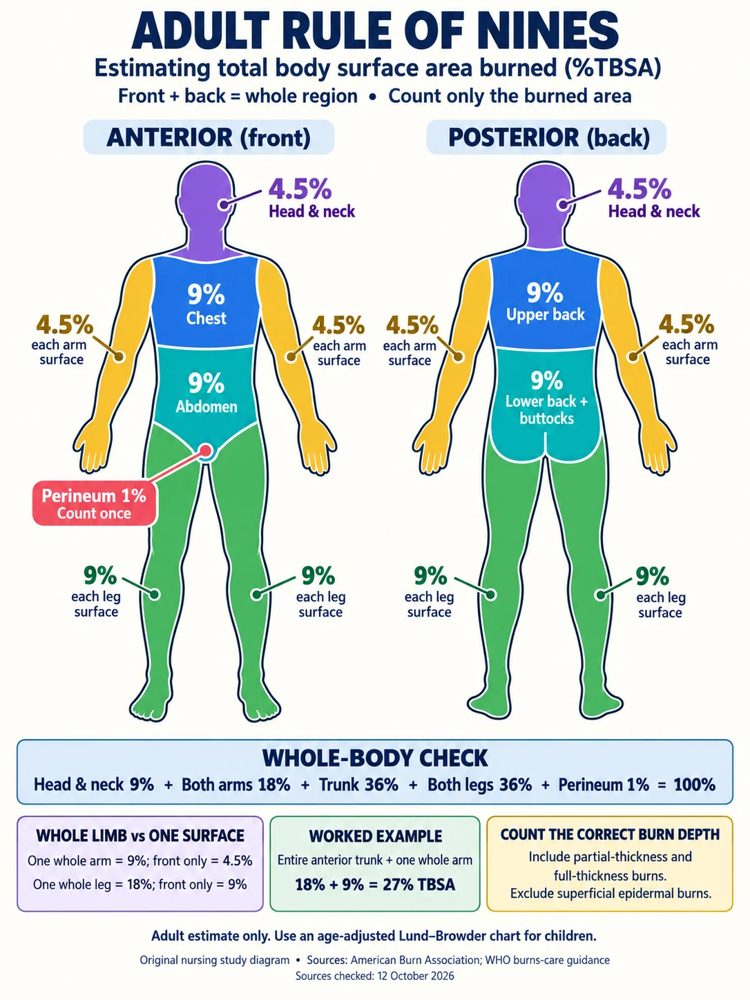
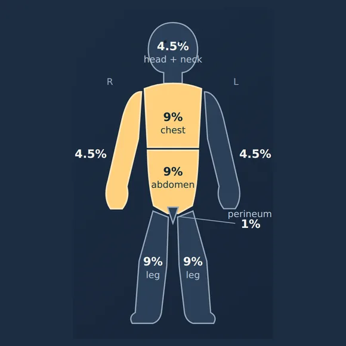
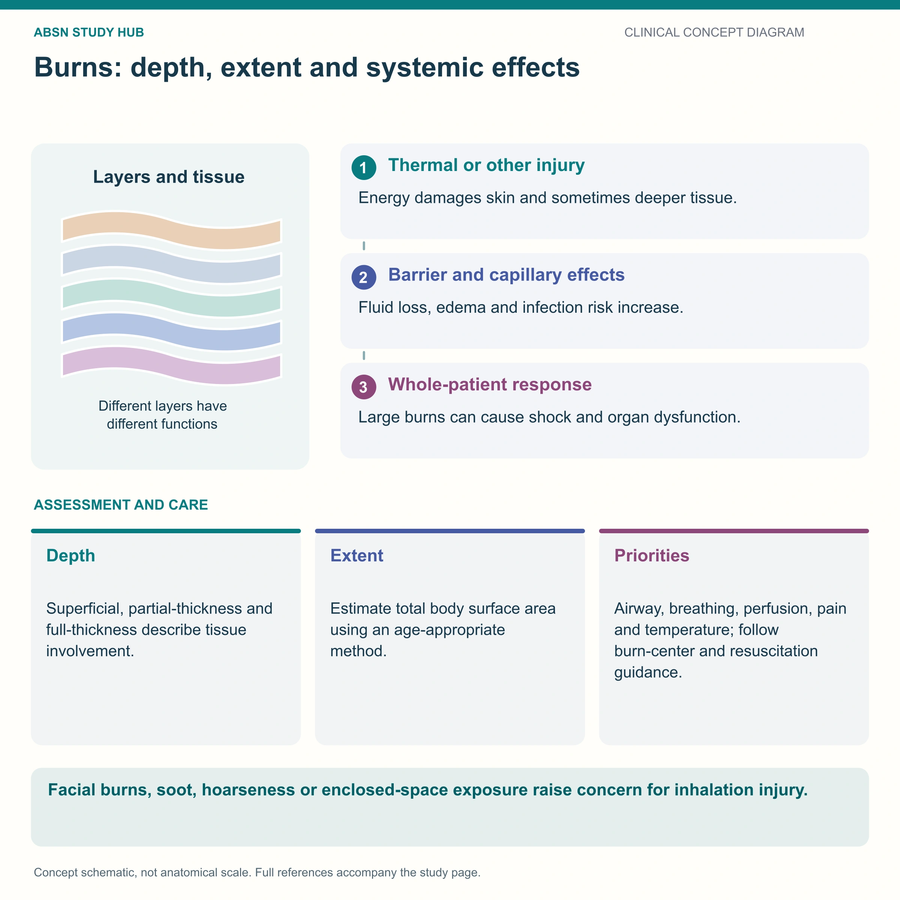
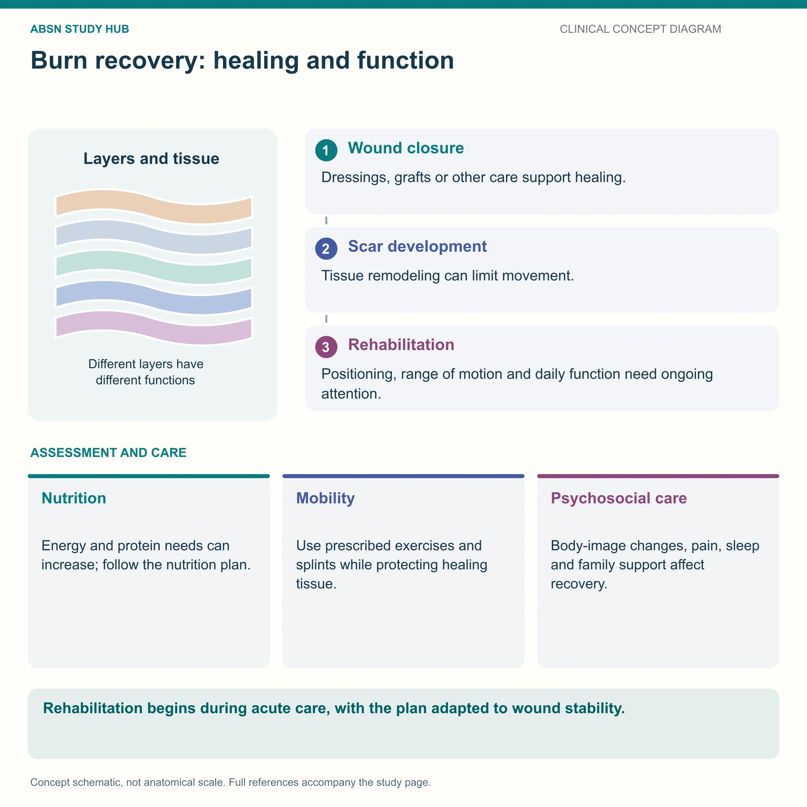

Rule of Nines 📐
Burns III · TBSA estimation & the Parkland fluid calculation — the math page
The Rule of 9's is a fast way to estimate the percentage of the body burned — the Total Body Surface Area (TBSA). You need that number for one reason: it is the input to the fluid-resuscitation formula. Once you have TBSA, the Parkland formula tells you how many milliliters of Lactated Ringer's to give in the first 24 hours — and the urine output tells you whether that number was right.
📄 Simple Nursing original — opens in Drive →
Preview the Simple Nursing sheet here
🧭 This page vs. its sibling — they are NOT the same page
NG-146 (this page) = the NUMBERS. Rule of 9's, the palm rule, Lund–Browder, pediatric proportions, the Parkland formula, the 8-hour/16-hour split, and worked practice problems.
NG-164 = the REHABILITATION PHASE. What happens after the wounds close: contracture prevention, positioning and splinting, pressure garments, water-based lotion, daily exercise, scar maturation, itch, sun protection, nutrition and psychosocial recovery.
Both come from the same source infographic, so they share a title — but do not study them as one page. This one is arithmetic; that one is recovery.
THE RULE OF NINES
STEP 1 · GET THE PERCENTAGEDivide the adult body into chunks of 9% (plus one 1% chunk). Front and back are counted separately.
🧍 Adult Rule of 9's — anterior & posterior, fully labeled
EXAM TIP A whole arm or leg includes front and back. Front of one arm = 4.5%; whole arm = 9%. Count the perineum’s 1% only once.


NUR 258 · MODULE 4 · ADULT RULE OF NINES
📐 Nines Navigator — Rule of Nines Practice
Practice adult burn percentages with a front-and-back body map, 40 cases, six-question rounds, hints, and worked answers. No timer.
Practice calculating TBSA →Read the chart as text
| Region | Front | Back | Whole |
|---|---|---|---|
| Head & neck | 4.5% | 4.5% | 9% |
| Each arm (with the hand) | 4.5% | 4.5% | 9% |
| Trunk | 18% (chest 9 + abdomen 9) | 18% (upper back 9 + lower back & buttocks 9) | 36% |
| Each leg (with the foot) | 9% | 9% | 18% |
| Perineum | — | — | 1% (count once) |
Whole-body check: head & neck 9 + both arms 18 + trunk 36 + both legs 36 + perineum 1 = 100%.
Worked example: entire front of the trunk + one whole arm = 18% + 9% = 27% TBSA (assuming those whole surfaces are partial- or full-thickness).
Which burns count: superficial partial-thickness, deep partial-thickness and full-thickness. Superficial (epidermal) burns are left out.
- Count a region’s full percentage only when the whole surface is burned.
- Hands are already in the arm values; feet are already in the leg values.
- Buttocks belong to the back of the trunk, not the legs.
- Adults only: children use an age-adjusted Lund–Browder chart. How a child’s proportions differ is in the next card.
Sources checked 12 October 2026: American Burn Association · WHO burns care, Annex 3 · HHS REMM: burn size. An original study diagram, not an official ABA or WHO chart.
⭐ The three habits that stop Rule-of-Nines mistakes
Only partial-thickness (2°) and full-thickness (3°/4°) burns are included in TBSA. A superficial (1°) sunburn is NOT counted — it does not leak the way deeper burns do, so counting it would over-estimate the fluid.
👶 Children are NOT small adults — the proportions change
Answer first: a child's head is proportionally much bigger and the legs proportionally smaller. Using the adult chart on an infant badly under-estimates the burn.


The most accurate method in children is the Lund–Browder chart, which assigns a different percentage to the head and legs for each age band. The pediatric Rule of Nines above is the quick bedside version.
THE OTHER TWO METHODS
STEP 2 · WHEN 9's WON'T WORKRule of 9's is fast but blunt. Use the palm rule for scattered burns and Lund–Browder when accuracy matters.
🖐️ The palm (hand) rule — 1% per palm
Answer first: the patient's own palm including the fingers is roughly 1% of their TBSA. Use it for patchy, scattered or irregular burns that don't fill a whole 9% region.
🧾 Lund–Browder — the accurate one
A printed chart that assigns a percentage to each small body segment and adjusts the head/thigh/leg values by exact age band.
- Most accurate method, and the standard in burn centers
- Essential in children, where Rule of 9's is crudest
- Slower — you shade a diagram and add up small numbers
- Rule of 9's is the rapid field/ED estimate; Lund–Browder is the definitive one done later
🚨 The classic errors — check yourself
- Counting a whole leg (18%) when only the front was burned (9%)
- Counting the 1° sunburn region into TBSA
- Forgetting the perineum's 1% when the stem specifically mentions it
- Using adult percentages on a toddler
- Adding to more than 100%
- Using the nurse's palm instead of the patient's
THE PARKLAND FORMULA
STEP 3 · TURN % INTO mLThree numbers multiplied together. The hard part is not the multiplication — it is knowing what each number means.
🧮 4 mL × kg × %TBSA
The commonly taught version of the consensus (Parkland) formula for the first 24 hours after a major burn, given as Lactated Ringer's.
⏳ The clock starts at the TIME OF INJURY — not arrival
This is the highest-yield trap in the whole topic. If a patient is burned at 08:00 and reaches you at 10:00, you have 6 hours left to deliver the first half — so the rate has to be higher, not the same.
➗ Turning the total into an hourly rate
Exam questions often want the mL/hr, not just the total. Two divisions:
- The first-8-hour rate is always double the next-16-hour rate
- If hours have already been lost, divide by the hours remaining in that block
- Weight in pounds? ÷ 2.2 to get kilograms first
💧 After the first 24 hours
The capillary leak begins to seal, so the plan changes.
- Crystalloid volume is reduced and titrated down as urine output allows
- Colloid (e.g. albumin) is often added in the second 24 hours in many protocols, once capillaries are less leaky, to hold fluid in the vessels
- Maintenance fluid (often with dextrose) replaces evaporative loss
- Electrolytes flip: potassium falls, H&H falls with hemodilution — see NG-107
- Watch hard for the swing to fluid overload during diuresis: crackles, JVD, dyspnea, sudden weight gain
WORKED PRACTICE
STEP 4 · DO THE MATHCover the answer, work it on paper, then check. Three of these are lifted straight from the classic question banks.
🎓 Example 1 — full-thickness burns to ALL posterior surfaces
Why students miss it: they use whole-limb values (9% per arm, 18% per leg) instead of halving for the posterior surface only.
🎓 Example 2 — anterior legs + perineum
Why students miss it: they forget the perineum's 1% and answer 18%, or they count whole legs and answer 37%.
🎓 Example 3 — now turn it into milliliters
🎯 Your turn — three to try
Practice A · 70 kg adult, burns to the entire front of the trunk and the whole right arm
Practice B · 80 kg adult, burns to the head and neck (all round), anterior trunk, and both anterior legs
Practice C · 154 lb adult, posterior trunk and the back of both legs, burned 3 hours before arrival
QUICK RECALL
SAY IT OUT LOUD🎯 Cover & check — 7 rapid-fire questions
📚 Where to go next
- NG-164 — Rehabilitation phase — this page's sibling: what happens after the wounds close. Positioning, pressure garments, lotion, daily exercise, scars and psychosocial recovery.
- NG-177 — Top missed questions — these calculations as exam items with every distractor explained.
- NG-107 — Major burns: pathophysiology — why the fluid leaks in the first place.
- NG-123 — Major burns: treatment — how the fluid is actually run and titrated.
WATCH & PRACTICE
OUTSIDE LINKSTwo videos and a free practice quiz your course pointed you at. They open on someone else’s site — their questions stay there. Your own Parkland worksheet is built into the Module 4 knowledge check and the NUR 258 Mega Quiz.